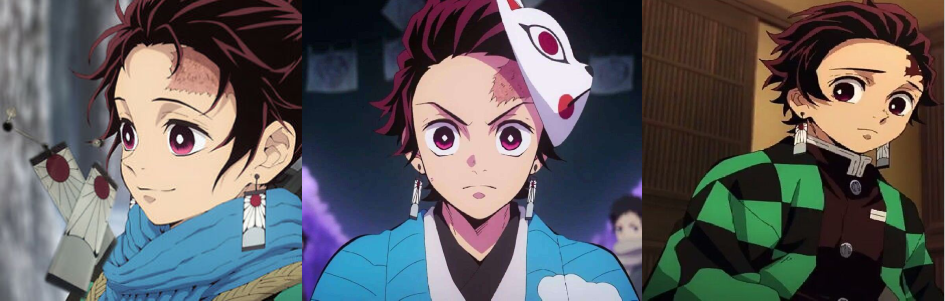

竈門炭治郎
Tanjiro Kamado

Bonjour et bienvenus sur cette page ! Ici, vous trouverez toutes sortes d'informations sur Tanjiro Kamado, l'un des protagonistes principale de Demon Slayer. En espérant que les informations ci-dessous vous seront utile, nous vous laissons désormais à la découvertes de cette page !
Qui est Tanjiro Kamado ?
Tanjiro Kamado est le protagoniste principal du manga et anime Kimetsu no Yaiba. C'est un pourfendeur de démons, classé en tant que Kanoe, il s'est joint à l'Armée des pourfendeurs de démons pour traquer celui qui est responsable du meurtre de sa famille et de la transformation de sa sœur, Nezuko Kamado, en démon.
Formé par Sakonji Urokodaki, il a été spécialisé au Souffle de l'Eau.
Apparence
Tanjiro est un jeune homme petit pour son âge et au physique athlétique. Il possède des cheveux noirs hérissés avec des pointes bordeaux, peignés dans le dos pour mettre des coups de têtes et de grands yeux noirs avec des pupilles blanches qui apparaissent pourpre sombre sous l'iris. Il a également une brûlure sur le front, qu'il s'est faite en voulant protéger son frère d'une théière qui tombait, après un combat contre un démon elle devint rouge sombre et changea de forme. Il est à noter que ses mains sont visiblement plus dures que ne devrait l'être quelqu'un de son âge en raison de son entraînement rigoureux avec Sakonji Urokodaki.
Lors de sa première apparition, Tanjiro porte un haori à motifs vert/turquoise foncé et noir à carreaux sur une robe blanche et un pantalon noir avec des bandes blanches circulaires enroulées autour de ses mollets. Il porte parfois une écharpe bleue. Il porte également une paire de boucles d'oreilles hanafuda, décorées d'une fleur blanche et rouge.
Lors de la Sélection Finale, Tanjiro porte un kimono bleu et un pantalon noir de style jinbei, presque identiques à ceux de Sakonji. Il porte encore ses boucles d'oreille de hanafuda, semblable au reste des apprentis formés sous Sakonji, Tanjiro porte un masque de renard sculpté à la main, fabriqué par son maître sur le côté de la tête. Le masque a des yeux, des oreilles et des taches rouges à chaque extrémité de la bouche. Dans le coin supérieur droit du masque, un motif rouge en forme de soleil est décoré, qui symbolise probablement la cicatrice sur son front.
Après être devenu un Pourfendeur de démons, Tanjiro garde ses boucles d'oreilles emblématiques hanafuda sur ses oreilles et son haori à carreaux par-dessus l'uniforme standard des pourfendeurs, qui consiste en une combinaison en gakuran brun foncé, une ceinture blanche autour de la taille et des chaussettes tabi, ainsi que des zôri, avec des bandes de tissu blanc enroulées étroitement autour de ses mollets. Il porte une grande boîte en bois sur le dos, où sa sœur dort pendant la journée.
Lors de sa deuxième rencontre avec Muzan Kibutsuji , il se blesse l'œil droit dans la Forteresse Dimensionnelle Infinie. Plus tard, Tanjiro s'effondre et sa blessure commence à former une grosse bosse sur son œil droit en raison du poison qui lui a été infliger par Muzan. Plus tard, lorsque Tanjiro se réveille, il est décrit comme ayant l'air "repoussant" par Muzan. Par la suite, il se fera couper le bras par ce dernier.
Après avoir été transformé en démon par Muzan, Tanjiro est capable de guérir la bosse sur son visage ainsi que de régénérer son bras perdu et d'autres blessures plus petites. Il obtient des yeux avec des pupilles fendues, des crocs, des marques en forme de flamme sur son front gauche et sa mâchoire droite qui rappellent ceux de Kokushibo, en plus d'une troisième plus petite marque en forme de flamme descendant du côté droit de sa tête jusqu'à son sourcil après avoir vaincu la faiblesse de tous les démons, le Soleil. Sa cicatrice se transforme en une flamme ayant l'apparence d'une marque des pourfendeurs de démons permanente. Elle est devenue la plus longue et la plus grande des trois. Les trois marques pointent vaguement vers son nez, bien que seule sa marque de cicatrice l'atteigne. Il enfile toujours son uniforme des pourfendeurs taché de sang, une manche arrachée là où son bras fut coupé, mais perd son haori à carreaux ainsi que son sabre du soleil à la hanche.
Après être revenu à sa forme humaine, Tanjiro perd la capacité de voir de son œil droit, dont l'iris est maintenant d'une couleur gris-rose terne et la pupille noire plutôt que son blanc d'origine. Son bras gauche, qu'il a régénéré en tant que démon, prend maintenant l'apparence de ce qu'une personne âgée peut avoir, devenant ridé et squelettique, et il perd toute sensation en dessous du coude et donc la capacité de le déplacer de son épaule vers le bas.
Personnalité
Tanjiro est gentil par nature et a été décrit par d'autres comme ayant des yeux très doux. Il fait preuve de beaucoup de détermination et n'abandonnera pas dès qu'il aura un objectif à atteindre. Le meilleur exemple de cela est sa quête incessante de trouver un traitement curatif pour Nezuko. Même s'il est relativement fort en soi, il n'est pas opposé à demander de l'aide aux autres quand il en a besoin. Il est très protecteur de ses amis et encore plus de sa sœur cadette. Cependant, malgré sa nature aimable et compréhensive, Tanjiro a une limite à sa tolérance et un dégoût pour la grossièreté, car il est facilement ennuyé par la plainte continuelle de Zenitsu Agatsuma et irrité par les actes barbares d’Inosuke Hashibira.
L'attribut le plus remarquable de Tanjiro est sa capacité d'empathie avec quiconque, même les démons, ce qui le faisait souvent hésiter avant de porter le coup de grâce. Ce moment d'hésitation a un inconvénient, car il a permis à certains démons de profiter de la nature compréhensive de Tanjiro pour se rétablir et poursuivre le combat, bien que cela se produise rarement. Cependant, au fil des années de service, Tanjiro acquiert de l'expérience et devient plus calculateur et plus strict dans ses décisions. Son courage pour protéger les faibles l’engage à faire face à son ennemi avec respect et dignité, qu’il soit contre les bonnes personnes ou contre les démons diaboliques.
Sous la carapace plutôt gentille et amicale de Tanjiro, se trouve une personne emplie d'un désire de vengeance et de rage ardentes. Ce côté de lui ressort lorsque Tanjiro affronte Muzan pour la première fois, prêt à sortir son épée et à l'attaquer. Lorsque Muzan s'échappe, Tanjiro libère sa frustration et déclare qu'il sera le seul à tuer Muzan. À un autre moment, lorsque des pourfendeurs se font brisé le cou par les fils de la Mère Araignée Démon, Tanjiro montre une colère notable que même Inosuke ressent. Ce côté de Tanjiro ressort pleinement après le discours de Muzan où il se compare à une catastrophe naturelle. Tanjiro répond à cela en le qualifiant comme un « être qui ne devrait pas exister ».
En tant que démon, Tanjiro semblait être insensé, comme la plupart suivent initialement leur transformation. Il a agi comme une bête sauvage, attaquant quiconque en vue sans aucune hésitation. Même ses amis et camarades n'étaient pas en sécurité. La seule exception était Nezuko, qu'il a refusé de blesser même après avoir goûté son sang, un signe possible qu'il combattait sa transformation. Son hostilité envers les pourfendeurs de démons pourrait également être due au fait que son esprit était affecté par le désir de Muzan de tuer tous les pourfendeurs de démons.
Histoire
Tanjiro a grandi sur une montagne avec ses jeunes frères et sœurs et ses parents en tant que fils aîné de la famille Kamado. Lorsqu'il était enfant, Tanjiro appris la Danse du Dieu du Feu de par son père, Tanjuro Kamado, sachant inconsciemment que la danse était en réalité le Souffle du Soleil, un Style de Souffle utilisé au combat pour tuer les démons. Plus tard dans son enfance son père meurt d'une maladie, ce qu'il amène à avoir des responsabilité très tôt et à être une figure paternelle pour ses frères et sœurs.
Tanjiro était très affectueux envers ses frères et sœurs, faisant tout son possible pour s'occuper d'eux. Lorsqu'un de ses frères a accidentellement renversé une bouilloire, il l'a protégé et a reçu une cicatrice de brûlure au front. Tanjiro était responsable de la vente de charbon de bois dans la ville la plus proche afin de gagner de l'argent pour la famille et semblait fréquenter la ville assez souvent, car les habitants le reconnaissaient facilement et demandaient régulièrement son aide.
Aptitudes et compétences
Dès le départ, bien qu'il ne fasse pas partie de l'armée des pourfendeurs de démons, Tanjiro a réussi à surprendre Giyu Tomioka, le pilier de l'eau. Après avoir commencé sa formation dans le Souffle d'Eau. Après s'être rappelé la Danse du Dieu du Feu, qu'il a appris auprès de son père, il aurait presque pu vaincre Rui, Onzième Lune Inférieure. Après avoir éveillé sa marque et s'être entraîner encore et encore, Tanjiro a prouvé qu'il était capable de tenir tête même aux Lunes Supérieures comme Akaza, Giyu comparant même sa force à celle d'un pilier. Après avoir été empoisonné par Muzan et avoir eu une vision mystérieuse de ses ancêtres, Tanjiro a pu lutter seul contre Muzan, qui venait de vaincre à lui seul Obanai, Mitsuri, Gyomei, Giyu, Sanemi, Zenitsu et Inosuke. Muzan a exprimé des sentiments de malaise envers Tanjiro en raison des similitudes entre lui et Yoriichi.
Aptitudes naturelles
Odorat développé : Tanjiro a un sens de l'odorat accru avant même d'avoir suivi son entraînement. Il est assez fort pour qu'il puisse sentir la « Ligne de Faille » d'un adversaire qui lui permet une ouverture dans laquelle attaquer et distinguer les espèces, ainsi que leur position approximative. Après avoir exercé cette compétence pendant un temps en tant que chasseur de démons, il a acquis la capacité de sentir les émotions ainsi que de suivre des objets, des humains ou des démons sur de longues distances. Au cours de sa formation avec Yoriichi Zeroshiki, Tanjiro a éveillé la capacité de prédire les mouvements de ses adversaires grâce à l'odorat, qui peut être détecté plus rapidement que la « Ligne de Faille ».
Aptitude au combat : Ce trait de Tanjiro a été souligné par Giyu lors de leur première rencontre, dans laquelle Tanjiro a habilement élaboré un plan pour attaquer Giyu par surprise en chargeant vers lui, sans montrer au chasseur de démons qu'il n'était pas armé, et abattre Giyu avec une hache qu'il avait jeté en l'air au préalable. L'attaque a échoué, mais Giyu était toujours très impressionné par le plan de Tanjiro, d'autant plus qu'il était recrue à l'époque.
Force surdéveloppée : Après son entraînement au Mont Sagiri, Tanjiro a acquis une force et une vitesse accrues et en a fait preuve d'une grande utilité, comme on l'a vu lorsqu'il a sauté deux fois sa hauteur par-dessus le Démon Main qui a tué les disciples de Sakonji, lors de la sélection finale. Son front est également inhabituellement solide, car il est capable de blesser Sanemi Shinazugawa, le Pilier du Vent et même d'étourdir momentanément Gyutaro, la Lune Supérieure Numéro Six.
Vitesse surdéveloppée : Tanjiro est capable de suivre Akaza, une Lune Supérieure et un démon incroyablement rapide, lors de leur deuxième rencontre. Après avoir éveillé sa marque de Pourfendeur, la vitesse de Tanjiro augmente encore plus.
Réflexes surdéveloppés : Après avoir éveillé sa marque des pourfendeurs de démons, Tanjiro acquiert des réflexes extrêmement pointus. Il devient capable d'esquiver et de contrer facilement les attaques de Daki alors qu'elle est dans sa forme la plus faible, sans que Daki puisse le blesser du tout.
Sabre du soleil rouge cramoisi : Lors de sa deuxième bataille contre Muzan, Tanjiro gagne la capacité de teindre son sabre du soleil dans une couleur rouge cramoisi, ce qui lui donne la possibilité d'entraver la régénération accrue des démons.
Monde transparent : Comme son père, il a acquis la capacité de prévoir l'attaque de l'adversaire tout en ne montrant aucun esprit de combat et aucun sentiment de soif de sang, obtenant l'immunité de quiconque peut les détecter. Dans cet état, son intuition de mouvement et sa vitesse d'évasion augmentent considérablement.
Marque des pourfendeurs de démons : Tanjiro a éveillé sa marque pour la première fois en combattant Daki, une Lune Supérieure, et une fois de plus en combattant Akaza, la Lune Supérieure Numéro Trois. Cet état augmente considérablement sa force, sa vitesse et son temps de réaction. Dans son combat contre Akaza, après avoir accédé au monde transparent en plus de sa marque Pourfendeur, il est capable de se déplacer assez rapidement pour lui couper la tête sans lui donner le temps de réagir, ce qui aurait tué Akaza si ce n'était pas pour lui de surmonter sa faiblesse face à la décapitation d'un sabre du soleil. Cependant, il convient de noter que la capacité de détection de la boussole d'Akaza reposait sur sa détection de l'esprit de bataille de son adversaire, et Tanjiro n'a pu montrer aucun esprit de bataille lors de cette attaque. Le seul inconvénient est que Tanjiro ne peut entrer dans cet état qu'en de rares occasions et ne peut l'utiliser que pendant une très courte période car cela provoque l'épuisement de son corps, comme le montrent ses combats contre Akaza et Daki.
Aptitude à l'épée
Souffle de l'Eau
Il lui a été enseigné par Sakonji Urokodaki, l'ancien Pilier de l'Eau avant Giyu. L'utilisateur peut augmenter la quantité d'oxygène dans son sang en contrôlant son rythme respiratoire, ce qui augmente sa force et son agilité pour égaler celles d'un démon. Tanjiro a maintenant appris à faire le souffle de concentration intégral à tout moment, augmentant encore sa force de base, sa vitesse et son endurance. En se concentrant sur la respiration précise, il est capable d'arrêter le saignement des blessures. Avec cette force et cette capacité améliorée il arrive à trouver la ligne de faille. Tanjiro peut utiliser dix mouvements différents.
Techniques
Premier Mouvement : Entaille de l'Eau Calme
Une seule entaille concentrée.
Deuxième Mouvement : La Roue d'Eau
Tanjiro saute et tourne son corps tout en tranchant.
Deuxième Mouvement : La Roue d'Eau - Variation Latérale
Une version horizontale du second mouvement.
Troisième Mouvement : Danse des Courants
Tanjiro agite sa lame sur son adversaire d'une manière qui imite le mouvement des vagues à la surface de l'eau.
Quatrième Mouvement : La Marée Déferlante
Tanjiro fait plusieurs entailles consécutives tout en tordant son corps d'une manière fluide semblable à une marée dure.
Cinquième Mouvement : L'Averse Providentielle
Un « coup d'épée de bonté » qui tue la cible avec peu ou pas de douleur. Utilisé lorsque l’ennemi se rend.
Sixième Mouvement : Tourbillon
Tanjiro tord férocement le haut et le bas de son corps, créant un tourbillon qui coupe tout ce qui s'y trouve. Peut être utilisé dans un endroit sans appui solide et, s'il est utilisé sous l'eau, peut générer un grand bain à remous qui attire tout ce qui se trouve à proximité en plus de les couper comme une grande lame.
Sixième et Troisième Mouvement combinés : Tourbillon Dansant
Le sixième mouvement combiné aux mouvements du troisième, permettant à l'utilisateur de lancer une frappe puissante tout en se rapprochant de la cible.
Septième mouvement : Goutte de Rosée Troublant l'Eau Dormante
Un coup rapide et précis. La technique du souffle de l'eau la plus rapide.
Septième mouvement : Goutte de Rosée Troublant l'Eau Dormante - En Crochet
Une version en crochet du Septième Mouvement qui s’exécute sous un angle afin de minimiser l'impact d'une cible en mouvement.
Huitième Mouvement : Impact de la Cascade
Tanjiro coupe la cible verticalement.
Neuvième Mouvement : Embruns des Flots Déchaînés
Minimise le temps d’atterrissage et la surface nécessaire à l’atterrissage, ce qui permet à Tanjiro de se déplacer sans limites.
Idéal pour les combats dans des endroits sans appui solide.
Dixième Mouvement : Les Vicissitudes de la Vie
Une attaque constante qui augmente en puissance à chaque rotation, créant un puissant coup.
Danse du Dieu du Feu
Il lui a été enseigné par son père, Tanjuro Kamado. C'est un style de Souffle qui augmente la force et l'endurance de l'utilisateur. La danse est composée de 12 segments répétés du coucher au lever du soleil. Cependant, il existe un treizième mouvement inconnue qui est obtenue si les mouvements sont répétés les uns après les autres, car les techniques sont censées être connectées comme un cercle, allant de la Valse à la Valse Enflammée. Il est confirmé plus tard que la Danse du Dieu du Feu est la même chose que le Souffle du Soleil.
Techniques
Valse
Une seule entaille concentrée.
Valse Foudroyante
Développé par Tanjiro. Celui-ci utilise la Frappe Foudroyante
de Zenitsu et la combine avec sa Valse en pompant
de l’air dans tout son corps, en le concentrant sur les jambes,
et en le libérant tout en finissant avec un coup flamboyant.
La technique a été capable de dépasser Genya et Nezuko,
ainsi que Hantengu en fuite, bien qu’elle soit
encore plus lente que le Frappe Foudroyante de Zenitsu.
Paradis Bleu
L'utilisateur tourne son corps pour donner un coup à 360 degrés.
Miroir Brûlant Écarlate
L'utilisateur déchaîne deux entailles horizontales qui le défendent contre les attaques de l’avant ou du côté.
Arc-en-Ciel Parhélique
Cette technique est utilisée pour éviter les techniques
utilisant des torsions et des rotations à grande vitesse. Il fonctionne le plus efficacement sur les ennemis avec une bonne vision, car ils attaqueront une image postérieure de lui et non son corps réel.
Char Enflammé
L'utilisateur attaque l’ennemi pendant qu’il est distrait et assène un coup en l'air le tout en rotation.
Le Soleil qui Réduit les Os en Cendres
Une attaque circulaire qui protège des attaques frontales imminentes.
Estoc Brillant du Soleil
Un seul et unique coup avec le bout de la lame.
Chaleur Ondulante
L'utilisateur charge contre ses adversaires avec une lame flamboyante pour les trancher.
Le Coucher de Soleil
L'utilisateur saute en l’air, la tête en bas pour trancher ses adversaires avec une lame flamboyante.
Rai de Lumière
L'utilisateur s’envole en spirale pour envoyer une puissante entaille à ceux qui sont pris dedans.
Halo Solaire Danse Draconique
Ressemblant à un dragon, l’utilisateur se déplace en cercles
pour éviter les attaques ennemies et les tranches plusieurs fois.
Cette technique a d’abord été utilisée par Tanjiro en conjonction avec le Pouvoir Sanguinaire de Nezuko pour améliorer l’efficacité de la technique.
Lors de sa deuxième bataille contre Muzan,
il est capable d’utiliser cette technique sans l’aide de Nezuko.
Valse Enflammée
Un coup en deux temps qui commence par un coup à la vertical puis juste après un à l'horizontal.
Treizième Mouvement
L’utilisateur exécute en continu les douze mouvements du
Souffle en succession répétitive pour augmenter
la précision et l’agilité de ses mouvements.
Cette forme a été créée uniquement pour tuer Muzan
puisque la répétition des douze formes vise à
détruire les douze organes vitaux de
Muzan (7 cœurs et 5 cerveaux) qui se déplacent
librement à l’intérieur de son corps
grâce à sa capacité de changement de forme.
Hybridation des Souffles
Au cours de sa bataille contre la Lune Supérieure Numéro Six, Gyutaro, Tanjiro a pu combiner deux styles de Souffle, à la fois le Souffle de l'Eau et la Danse du Dieu du Feu , ce qui lui a permis d'augmenter considérablement sa vitesse pendant un court laps de temps et d'effectuer des attaques qui possèdent les qualités des deux styles de Souffle.
Aptitudes démoniaques
Tanjiro est plus tard transformé en démon par Muzan Kibutsuji, ce dernier tué par le pourfendeur, espérait transmettre ses sentiments et ses capacités à Tanjiro, le jugeant capable de réaliser ses dessins et de devenir le véritable roi immortel des démons. Bien que Tanjiro soit rapidement redevenu humain via la drogue humanisante de Tamayo, le pouvoir qu'il démontre pendant ce bref laps de temps en tant que démon semble être au moins à égalité avec ceux d'une Lune Supérieure, sinon Muzan lui-même. Plus tard, Yushiro a déclaré que, en termes de potentiel biologique, le potentiel de Tanjiro d'évoluer en tant que démon était beaucoup plus élevé que celui de sa sœur, qui était le premier démon à développer une résistance face à la lumière du soleil, ainsi qu'à Muzan.
Régénération avancée : Tanjiro possédait une formidable capacité de régénération, facilement égale à une Lune Supérieure. En devenant un démon, il a récupéré de toutes les blessures qu'il a subies lors de ses combats avec Akaza et Muzan, a reculé la croissance sur son visage causée par l'empoisonnement de Muzan, et a ensuite régénéré les dommages que lui a causés la lumière du soleil en quelques secondes. Il a également pu repousser instantanément son bras coupé. Selon Giyu, la vitesse de régénération de Tanjiro, ainsi que sa résistance à la lumière du soleil, le rendaient pratiquement invincible.
Résistance au soleil : Après sa première transformation, Tanjiro est initialement affecté par la lumière du soleil comme tout démon normal, mais il y développe rapidement une résistance et est rapidement capable de se déplacer en plein jour sans subir de dégâts. Il est possible qu'il soit capable de le faire parce que, comme l'a noté Muzan juste avant sa mort, il partage du sang avec Nezuko, un démon qui a conquis le soleil, et ses capacités semblent provenir des siennes. Giyu a prétendu qu'avec son immunité face au rayon du soleil, et sa régénération avancée, Tanjiro était pratiquement invincible.
Résistance aux sabres du Soleil rouge cramoisi : Selon Giyu, l'immunité au soleil de Tanjiro lui donne également une résistance contre les sabres du Soleil rouge cramoisi.
Métamorphose : Similaire à Muzan, et probablement parce qu'il a hérité son sang, Tanjiro a affiché des capacités de métamorphose. Il peut développer des protubérances ressemblant à des épines de son dos qui s'étendent comme des tentacules en forme de fouet à lames qui augmentent considérablement sa portée d'attaque. Cependant, probablement en raison de son état d'esprit, Tanjiro n'a pas montré la même habileté à les manier que Muzan.
Pouvoir Sanguinaire
Suite à sa transformation par Muzan en démon, bien que ce fut pendant un court instant, Tanjiro aurait développé ce qui semblerait être un Pouvoir Sanguinaire. Son pouvoir est basé sur la manipulation d'ondes et d'énergie.
Techniques
Onde de Choc
Semblable à Muzan, et probablement parce qu'il a hérité de son sang, les cris de Tanjiro peuvent créer une onde de choc puissante. La technique est suffisamment puissante pour faire repousser Zenitsu, Inosuke et Goto pendant qu'ils tentaient de le retenir, seul Nezuko pouvant s'accrocher.
Rayon d'Énergie
Tanjiro peut tirer un rayon d'énergie depuis sa bouche.
La technique est suffisamment puissante pour créer un petit cratère. Cependant, lorsque Nezuko a mis sa main devant sa bouche,
elle en est ressortie avec seulement une main saignante,
bien que Giyu ait noté qu'il n'essayait pas de lui faire du mal.
Anecdotes
-Son prénom contient le kanji pour le « charbon de bois » (炭た ん tan), « Pour guérir » (治じ hee) et « son, mâle » (郎ろ う rô) qui est aussi un suffixe de nom masculin courant. Le premier kanji du nom de famille de Tanjiro se traduit par un « cuisinière / four japonais traditionnel à bois ou au charbon de bois » (竈か ま ど kama), tandis que le deuxième kanji signifie « porte » (門ど faire).
-Le deuxième caractère pourrait aussi faire référence à (退た い 治じ taiji), qui fait référence à l'exorcisme des démons.
Tanjiro a été classé à la 1ère place lors du premier sondage de popularité de personnage avec 6 742 votes.
Quand Tanjiro ment, il n'a pas une expression normale en raison de sa nature honnête.
-Tanjiro a hérité son front dur de sa mère.
-Tanjiro a été incorrectement surnommé Gonpachiro Kamaboko, Gengoro Shakariki, Tontaro Itadaki, Kanjiro Anago, Tangoro Hamado, Jangoro Amado, Monjiro, Kentaro et Souchiro par Inosuke.
-Tanjiro est l'un des rares personnages à avoir un changement d'apparence d'épée du Soleil.
-Apparemment, Tanjiro est capable de comprendre ce que disent les oiseaux.
Merci à vous d'avoir visitez ce site, et plus particulièrement cette page, en espérant que celle-ci vous aura été utile !
さようなら ！
AU REVOIR !